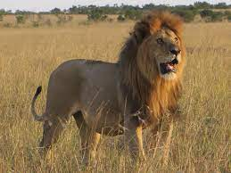

Que es?
MamÃífero felino de 250 a 350 cm de longitud (cola incluida), pelaje pardo claro, cabeza grande, cola larga terminada en un mechón; el macho es mayor que la hembra y tiene una larga melena que le cubre la nuca y el cuello; es carnívoro y habita en manada en desiertos y estepas de África y la India.
"el león es el rey de la selva"
Caracteristicas
- El león es un superdepredador que se ubica en el sector superior de la cadena trófica.
- El macho adulto es fácilmente reconocible por su gran estatura y llamativa melena, y tiene un peso aproximado de 150 a 250 kg.
- Las hembras suelen ser considerablemente más chicas, con 110 a 180 kg de peso.
- Los leones son sociables y suelen vivir en manadas.
Tipos de leones
- León de Katanga.
- León del Congo.
- LeónTransvaal.
- León de Atlas.
- León de Nubia
- Leónasiático.
Sobre los leones
Leones
- Alimentacion
- Carnivora
